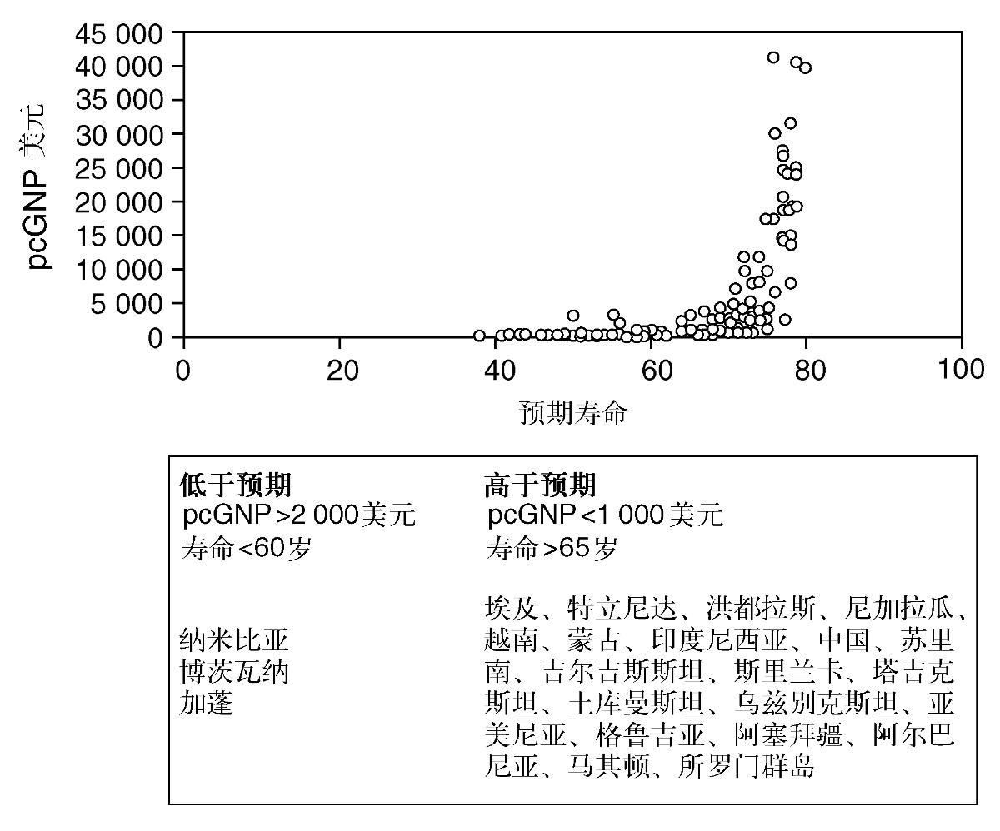
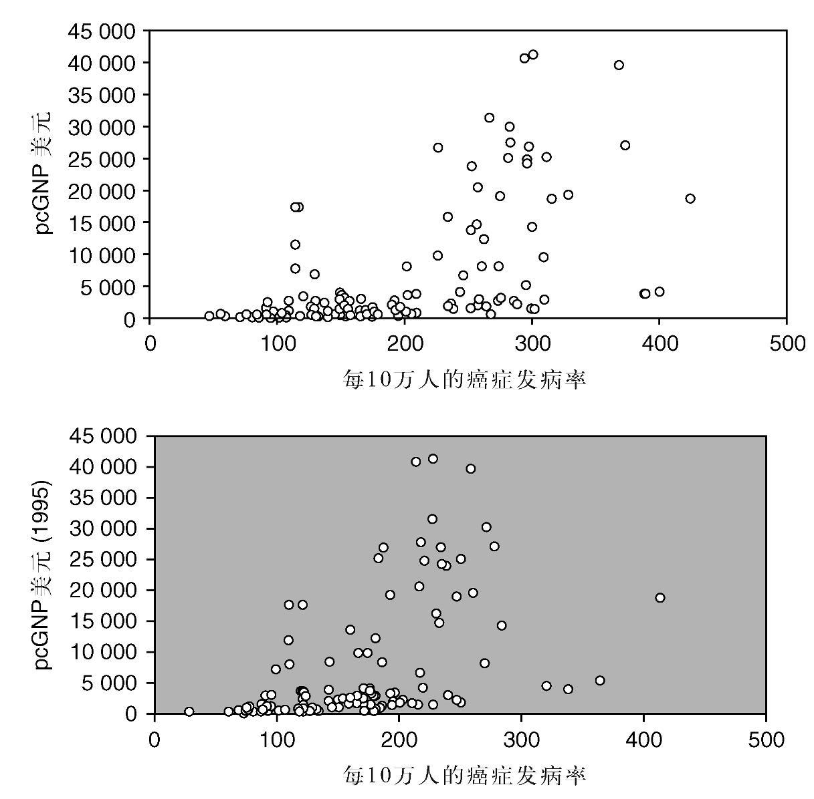
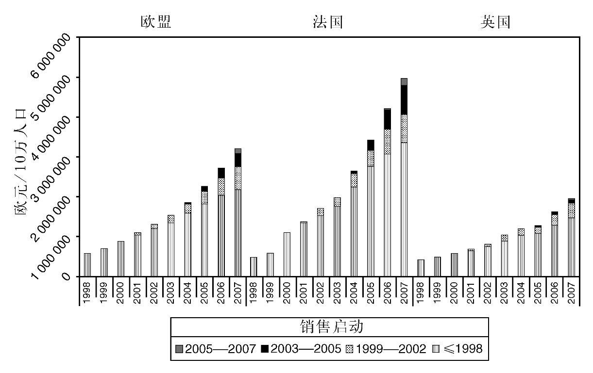
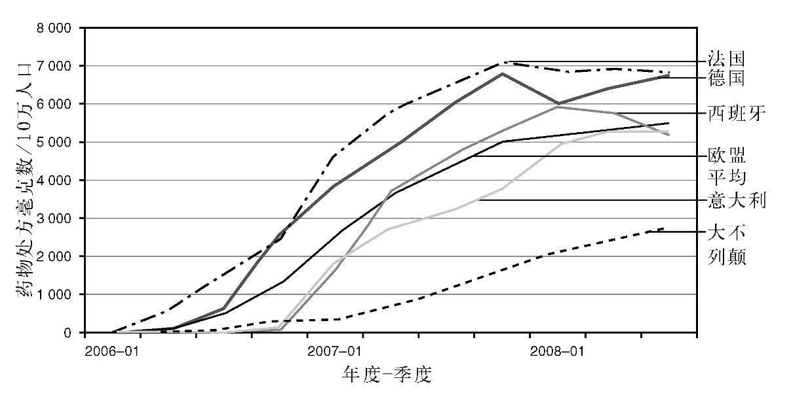

前面几章说明了现代癌症治疗极其复杂的性质，以及医学技术和药物疗法日新月异的发展。如上一章所述，这些变化得益于药物生产商和医疗设备制造商对新疗法的巨大投资。显然，新疗法必须收取回报，一般来说，成本也高于它们所取代的旧疗法。也有一些例外的情况，例如，一种提高治愈率的治疗方法可以降低后续疗法的下游开支，因而可能会使所使用的医疗资源净减少。衡量这些相互依存的变化显然非常复杂，因此，很多医疗保健的经济决策都关注新技术的直接购置成本（这些很容易衡量），而不是次级的下游变化。癌症治疗经常发生的情况是，这些成本都集中在生命的终点附近，从而引发充满争议的经费难题。本章用部分篇幅讨论了不同的医疗保健系统是如何应对这些难题的。
相比于单个药物的成本，经济因素对癌症治疗的显著影响也更多体现在宏观经济的层面上。总体而言，世界上的发达经济体有全面的医疗保健系统，广泛覆盖了从摇篮到坟墓的健康问题。不同的系统各有其优缺点，但主要的差别存在于发达世界与欠发达世界之间。显然，如果缺乏基础设施，对大多数人来说，就根本无须讨论是否要购买某种昂贵的新药。可以预测一下这些影响的规模：图23显示了人均国民生产总值（pcGNP）与以岁数计算的预期寿命之间的相互影响。可以看到有一些收入非常低的国家，其预期寿命不出所料也很低。然而，还有一些国家的pcGNP低于每年1 000美元，但预期寿命却超过了65岁。这些国家包括埃及、特立尼达以及中国。它们的共同特点是有一个综合公共卫生系统和良好的围产期保健。与此相反，还有些国家的pcGNP超过了2 000美元，而预期寿命却低于60岁。问题似乎在于HIV的感染率较高。因而笼统地说，一个国家的富裕程度会影响医疗保健的质量和预期寿命，这不足为奇，但其他因素也会起到重要的作用。其中一些因素很容易受到政府可控要素的影响，例如为实现各类资源和公共卫生活动等的影响最大化的整体布局。相反，在这个分布的顶端，国民收入一旦达到某个水平，就没有多少进步的空间了，预期寿命显然在接近80岁的位置达到上限。至于这种情况是否会在未来随着技术改善而变化，仍有待观察。
如果我们继续考察国民收入对癌症的影响，就会看到另一个有趣的结果。随着财富的增加，患癌的风险也在增加。这部分归因于预期寿命延长的影响——如果你没有饿死或是年纪轻轻便死于感染，就有大得多的机会能活到相对较大的年纪，患上癌症。其他因素也起到了作用，例如，一旦国民收入超过人均5 000美元，癌症的发生率就会达到每年每10万人中250—400 例（见图24）。然而，有一些国家的国民收入在此范围之内，但癌症发生率却低于此值的三分之一，这些国家都在中东地区。这归因于尽管国民收入有所提高，他们却普遍遵守更传统、非西化的生活方式。与之相反，有一组国家的癌症发生率和西方一样高，国民收入却低于每人5 000美元。这些前苏联阵营的国家乍看之下似乎结果最糟——患有西方的疾病，收入却属于发展中世界。然而细察之下，情况却没有那么悲观——低收入诚然不假，但高癌症率却是因为有着组织完善的医疗保健系统，他们的预期寿命较长。近来关于“公费医疗”优缺点的讨论，特别是关于英国国家医疗服务体系（NHS）和美国系统的讨论，都强调有必要进行冷静客观的分析。尽管美英两国的某些结果确实存在差别，但在医疗保健系统高度发达的所有国家，整体预期寿命也非常相近——虽然美国共和党最近在谈论NHS的“死亡专家组”，事实上西方的医疗保健为了让大多数公民健康到老，已经表现得相当出色了。

图23 人均国民总收入和预期寿命

图24 人均国民收入与癌症风险，分为男性（上）和女性（下）
尽管从国家拨款这个层面上说，上述这些都是实情，但癌症疗法成为新闻热门话题之日，却往往是一种新疗法拒绝让某人受惠之时，通常会以《千人一面的官僚拒绝让患者获得救命药物》之类重大新闻的形式见诸报端。这是共和党人指控NHS死亡专家组的由来（事实上，没有医疗保健的美国患者当然也会被另一套官僚或银行经理拒绝他们使用同一种疗法）。为什么在这些世上最富裕的国家会发生这样的事情？经费和成本可能的未来趋势又会怎样？
和大多数商品一样，医疗成本也会年复一年地上升，也就是通货膨胀。医疗的通胀率是可以衡量的，一般来说，它会高于整个国家的基本通胀率。这一点很重要，因为它意味着如果不削减成本，久而久之，医疗保健为了与新技术同步，会消耗掉更高比例的国民收入。美国就是最好的证明：2008年，美国的医疗通胀率是6.9%，大概是该国其他通胀率的两倍。根据当前的预测，这会导致美国的医疗卫生支出从2008年占国民收入的17%上升到2017年的占比20%。自金融危机以来，世界经济的巨大变化让这种情况难以为继。类似的数字也适用于全世界各大经济体。成本为何会以这种方式上升？要知道在NHS创建之初，该机构的主要设计师之一安奈林·贝文曾展望，因为健康的改善，成本会随着时间的推移而下降。原因在于研发新疗法的成本。为某种癌症疗法获批而进行的一次试验通常会花费大约1亿英镑。因此，新获批的药物需要收回这些庞大的研发成本，外加在此过程中以失败告终，因而根本不会产生任何效益的所有药物的成本。在药物获批之时剩余的专利期限通常是10年或更短，因为药物在获批过程完成的多年之前就需要保护专利了。因此，一种新药的大部分成本反映的都是获批前发生的成本——而实际生产尽管昂贵，通常却只占每一粒药价格的一小部分。一种药的专利到期后，在仿制药的竞争之下，其价格通常会下跌90%—95%，就反映了这一点。
因此，一种新药的要价，会与收回庞大的研发成本以及在专利许可到期之前的盈利密切相关。随着全球化的发展，全世界的价格趋于相近，使得穷国特别难以负担新药的价格。制药公司的定价策略不属于公共领域的问题，但想必是为了在全世界实现收入最大化。对于英国、澳大利亚和新西兰这样的国家来说，这样的定价往往超出了卫生系统准备支付的价格。也有限制较少的卫生系统愿意支付较高的价格，制药公司由此获得的高收入大概会抵消上述卫生系统支付价格的不足。比如在法国，一旦某种药物获批，相关专家均可任意开处方，没有直接的支出上限。这对使用率和总支出都有着巨大的影响，本章后文将谈到这一点。然而，持续的医疗通胀趋势和研发成本的上升将会对世界各地的预算施加压力，让获取治疗变得越来越困难。医疗设备方面也有类似的争论，上一章讨论的机器人手术的新技术就是一例。
位于赫尔辛基备受推崇的卡罗林斯卡学院 [5] 最近的一份报告详细调查了癌症药物经费的问题。该报告考察了整个欧盟的趋势，比较了各成员国的支出模式，并总结了全世界的问题。从全球范围来看，2006年的癌症药物市场价值340亿美元，在2008年上升到430亿美元，制药业每年的研究开支为60亿—80亿美元，美国国家癌症研究所另外投入36亿美元，欧盟也追加投入14亿欧元。全世界正在试验的所有药物中，大约有半数是治疗癌症的。在欧盟，每10万人口的癌症药物销售额从1996年的不足50万欧元，上升到了2007年的逾250万欧元——10年中增加到原来的6倍。此外，尽管新药带给预算的压力越来越大，上述药物销售额的增加却并非由于新药的价格昂贵，而主要是因为现有药物的使用与日俱增。图25表明了这两个趋势，显示出按照药物获得批准的年度划分，药物开销的逐年增加。该图还显示了英法两国的对比，法国对肿瘤药物的处方基本上没有控制，而英国则对此严格监管。

图25 1998—2007年欧盟癌症药物的销售额
已有药物的开支为什么会有这样大的增长？答案在于药物获批的过程及随后使用的方式。查看第三章图18关于癌症治疗的分类说明，就可以发现，有大约40%的患者在某个阶段发展成晚期癌症，其中大多数人最终都死于该病。新药最初一般都是在这群患者身上进行试验的，他们患上了不治之症，选择极其有限。例如在乳腺癌中，只有少数患者死于该病，因此，一种新近获批的终末期药物的开支也相对有限。然而，如果某种药物在这个群体中效果良好，那么对于那些有望治愈，但初步治疗后复发风险很高的早期患者，它的表现往往更好。这一群体约占最终会发展为晚期疾病的患者的一半。因此，成功的终末期药物试验会在这些患者身上进行，如果取得了成功，该药就会“迁移”到早期疾病患者中。
这个过程在赫赛汀（曲妥珠单抗）的故事里可见一斑。2002年，该药被证明可以延长晚期乳腺癌的存活时间。从一开始，赫赛汀就吸引了大量的宣传。这种新的治疗方法在乳腺癌患者中间迅速成名，导致大量患者要求参加试验。需求如此之大，以至于不得不为感兴趣的合格患者设置试验入组抽签。该药物获得批准后，它的价格（大约每年3万英镑）让英国人觉得高不可及，于是不得不开始在另一组女性中间进行另一种形式的抽签——英国癌症基金的邮政编码抽奖。后来由女性发起的声势浩大的运动成功地推翻了这些限制，但也为其他希望获得昂贵疗法的群体开了先例，这些疗法至今仍在折磨着各国采购当局，英国当局尤感万分为难。
2006年在早期疾病中的后续试验表明，如果给术后的早期高风险疾病的女性患者服用赫赛汀，和以前的疗法相比，疾病复发率会降低大约一半。因此，赫赛汀的许可证在同一年扩展到早期疾病患者中。遗憾的是，当前无法识别出哪些患者在手术和放疗后会复发。因为早期高风险组中的大多数女性通过标准疗法已经治愈，有资格接受该药治疗的人数大大增加（在英国增加了约三倍）——存在风险的所有患者都必须接受治疗，而不仅仅是那些注定会复发的人。在女性患者的宣传运动之后，在NHS，符合条件的所有患者都可以获得这种药物。
因此，医疗保健系统该如何就新疗法做出决策呢？假设有一种新疗法要花费30 000英镑，并可以把存活期延长6个月，从12个月延长到18个月。提供这种疗法的实际成本是多少？
● 30 000英镑
● 30 000英镑减去它所取代的疗法费用
● 30 000英镑减去它所取代的疗法费用，再减去其他支持性治疗所节省的费用
没有正确答案——这取决于谁来买单，买的是什么。答案一是患者的花费，如果医疗保健系统不能报销这种疗法的话。英国有时就是这样，NHS对它会购买的药物做了限制。旧的标准疗法可以报销，但新药则不能。在基于保险的系统中，额外的药物不在保险覆盖的报销体系之内，这也日益成为患者面临的问题。答案二是提供专家治疗的医院的费用，而医院对每个患者的预算是固定的（NHS的医院正是如此，美国的某些管理式医疗系统也是这样）。答案三是为患者的整个治疗提供资金的组织的价格：可能是NHS或保险公司等机构背后的国家。那么这就引发了另一个问题：相关费用中具体包括了哪些项目？比方说，每当患者死亡，临终关怀的费用大概都差不多。然而，如果像例子中一样，存活时间变长，它们就会属于另一个财政年度的药费支出——这些支出必须要推迟多长时间才可以算作节省？能够提高治愈率的治疗尤其如此，因为这样的支出会推迟到多年之后。同样，这些问题都没有一个简单的答案——不同的医疗保健系统会以不同的方式来解决这些难题。值得考察一下公共卫生专家和保险公司在决定是否资助某个特定疗法时，使用的是哪一种方法。
一个常用的方法是预测新疗法所带来的额外寿命的年均成本。对额外生命整体质量的一项调整也常常被用到。目标是产生一种叫质量调整生命年（QALY）的衡量方法。例如，一种治疗延长了一年的寿命，但生命质量降低了50%，将被计为0.5个质量调整生命年。这看上去相当简洁，医疗保健的购买者也可以用它来在不同的疗法之间进行比较：一种药物疗法可以延长三个月的寿命，另一种髋关节置换术能够改善生命质量，却无法延长预期寿命。对于手术和放疗这些成熟的疗法来说，患者常常可以痊愈，因而这种费用会分摊在所增加寿命的一个大数字上。如此说来，尽管大手术很昂贵，在大多数情况下，分摊到每个质量调整生命年的费用却非常低。相反，那些能够稍微延长终末期疾病患者存活时间的新药，其费用与质量调整生命年之比往往非常高，而问题就出在这里，下文将具体说明。
调整生命质量所面临的紧迫问题显而易见——我们如何定义一个人的生命质量受到了多少影响？例如，A先生的生活以久坐为主，他喜欢的娱乐方式是看电视，因此某个缺陷如果让他无法奔跑，妨碍不大。但B先生是个铁人三项运动爱好者，如果像A先生那样行动不便会让他非常痛苦。显然，任何质量调整都是主观的，并取决于具体受到影响的人。但无论如何，必须设法得到某种平均值，并把它加到这个等式里去。
第二个问题是如何衡量存活的收益。这看起来或许简单直接，但获取批准的试验往往只关注病情恶化所需的时间（即所谓的“进展时间”——见第四章），而不是总体的存活时间。因此，后续的“补救”治疗或许改善了患者起初在试验对照组里的结果。这些试验的终点是由美国食品药品监督管理局和欧洲药品管理局等监管当局设定的，并决定一家公司是否会获得产品上市许可证。然而，仅仅因为某种药物可以上市，并不意味着会有医疗保健系统来采购它。
为了解释这个过程具体如何运作，我们来纵览一下一种治疗晚期肾癌的新药近期进行的试验。在试验中，服用安慰剂的患者病情恶化的速度是服用索拉非尼的患者的两倍。该试验的独立数据监察委员会基于伦理的立场决定，研究应当终止，仍然存活的安慰剂组患者都接受了新药的治疗。后来在分析整体存活时间时，起初服用新药的患者比那些起初服用安慰剂的活得更长。但因为患者从安慰剂改服活性药物的补救效果，新药的存活优势远小于当初由该药对进展时间的影响得出的预期。由于伦理上不允许用不治疗的组别来重复这个试验，因此根本无法计算索拉非尼对晚期肾癌的生存效益。如此一来，该病的每个治疗调整生命年的费用估计也就存在着双重缺陷：对生命质量的影响是主观的，而真正的生存收益不得而知。这种双重不确定性使得英国对肾癌的决策过程从2006年到2009年一度陷入了停滞。
基于质量调整存活时间的决策，是由一家英国机构率先广泛使用的，这家机构有一个奥威尔式的名字，叫作国家健康与临床优化研究所，通常简写为NICE。这个机构旨在为公共卫生服务提供建议，建议后者应该为患者采购哪些疗法，而哪些疗法物非所值，不应定期拨款。NICE不考虑未获批准的或实验性的治疗。一些其他的欧洲国家也采纳了类似的方法，但到目前为止，更偏爱自由市场模式的美国避开了这种集中管控的路线。从最初批准某种药物到提供建议，NICE通常要花费数月甚至数年的时间。在英国，NHS的拨款由“采购商”和“供应商”两者平分。当前，采购商被称作初级保健信托（PCTs），负责在本地做出相同的决策（是否购买某种特定的疗法）。2011年，也就是本书撰写之时，即将到来的NHS改革将把这个采购商角色转移到家庭医生（全科医生）身上。目前的PCTs能力不同，细致程度也有异，他们履行这个角色时往往只提供最廉价的选择，等到NICE后来直接参与指导了，他们才被迫提供较为昂贵的疗法。这继而又导致了无人不晓（臭名昭著）的英国邮政编码抽奖——因为PCTs是基于地理位置的，获得任何NHS的治疗都取决于患者的地址和当地PCTs的决策过程。2008年，这导致花费最高的PCTs在接受癌症治疗的每位患者身上平均分配大约15 000英镑，而花费最低的PCTs为每位患者仅分配大约5 000英镑。比方说在我自己的诊所里，邮政编码在伯明翰（高开支地区）的患者可以轻松获得最新的肾癌药物。相反，大多数周边郡的癌症药物开支相对较低，获取同样的药物受到了极大限制。由于患者显然会在候诊室里交谈，所产生的沮丧和愤怒也就可想而知了。我们在自己的晚期肾癌患者中间按照邮编进行过一次生存时间审查。来自低开支地区的患者平均存活时间约为7—8个月，而来自高开支的伯明翰地区的患者则是大约两年——这是个非常真实而值得关注的差异。此外，被拒绝使用昂贵药物的患者，因为癌症未得到治疗所引起的疾病并发症发病率上升，去医院就诊的次数大约是对照组的三倍。从2006年（新的肾癌药物首次获得批准的年份）开始，这种状况持续了三年，直到2009年初，NICE最终建议将这批药物中的舒尼替尼提供给所有的肾癌患者（但获取其他新近获批的肾癌药物仍然受到严格的限制）。显然，未给这些药物拨款的PCTs认为，他们把这笔钱用在其他地方，可以为不同的患者群体产生更大的收益。但是，我没有看到任何可靠证据可以表明，与周边郡县相比，伯明翰缺乏资金的其他患者群体出现了什么较差的结果。因此，我认为当前的英国系统臃肿笨重，充满了不必要的官僚主义，并且在很多情况下耳目闭塞。那些声称代表公众的决策者无法以任何方式为其决策公开负责——比方说，他们并不是通过选举而上台的——也往往不会公开为自己的决策辩护。另一方面，在成本上升、人口老化、预算缩减的时代，必须做出某种形式的取舍，因而像NICE这样的机构大概会在未来风行全世界。
英国拟议中的新采购计划意味着一个群体，即全科医生，将既是采购商也是供应商，而第二个群体，医院的专科护理部门，将会是纯粹的供应商。这意味着如果能把患者拦在医院大门之外，在经济上对全科医生联合体有利，也许是件好事，也许不是。另一方面，他们必须向自己的病人证明他们为什么选择拒绝出资购买某些疗法，因为他们不可避免地必须如此，而当前的PCTs则没有这么做。较低的管理成本是否有可能像政府希望的那样，转化为更好的第一线治疗，仍有待观察，因为在我看来，全科医生为何是决定专科护理选择的最佳人选，还不甚清楚。
与其他类似的欧洲国家相比，英国缓慢复杂的决策过程也会推迟癌症新药的采用，并降低整体的开支。尽管并未正式公布，但据估计，每增加一个质量调整生命年，NICE的目标开支为最多30 000英镑，花费更高的治疗会被拒绝拨款。其他国家采用的方法没有这么形式化，但似乎非正式地应用了更高的临界额度。正因为这一临界点较低，当前英国在癌症药物上的开销是法德等国限额的大约60%。这一差别似乎特别集中在癌症疗法上，因为在心血管疾病或精神病治疗这另外两大开支领域中，并不存在这样悬殊的差别。治疗肾癌的舒尼替尼在2006年获得批准以来的开支模式很好地说明了这一点，与欧盟的平均值，特别是意大利、法国、德国和西班牙的具体数字相比，英国用于该药的开支上升得既迟又缓（图26）。与我们的欧洲邻国相比，英国的癌症药物开支相对较低，在每个患者身上的开支根据邮编而存在巨大差异，难怪在这个国家观察到的癌症治疗效果相对较差。

图26 药物舒尼替尼在欧盟的使用
开支的未来趋势看来也充满了挑战。英国目前有77种获批的癌症治疗药物（这里忽略了那些支持性治疗的药物）。其中有大约25种是在1995—2005年间获批的。2007—2012年间据估计有50种药物在申请获批。显然，这些药物不是每一个都能成功地越过最后一道关卡。此外，与替代治疗方案相比，很多药物所能提供的收益很小。然而，其中的一些（或许很多）药物可以提供巨大的后续收益。另外，会出现这样的持续趋势，即现有的昂贵新药迁移到早期疾病环境和更大的市场中，就像上文提到用于乳腺癌的赫赛汀的例子那样。这一切无疑会给所有的医疗卫生经济体带来更沉重的财政压力。我参加的国际会议有一个有趣的动向，就是关于这些观点的讨论。直到最近，因为获取新药相对困难，这在英国还只是一个大家感兴趣的话题而已。现在情况愈演愈烈，就连美国的发言人也开始讨论新疗法的可承受性了，而美国此前的医疗预算显然是个无底洞。贝拉克·奥巴马的医改方案也把同样的问题牢牢地提上了美国主流政治议程。
还有一些趋势有可能会缓解压力。首先，过了专利保护期的老药通常会价格暴跌，跌幅往往会高达95%。其次，如果结果的改善幅度足够大，其他医疗成本可能会有补偿性的节省，尽管开支是当下发生的，而节省会较晚且难以追踪（甚或会归于另一个医疗供应商）。最后，更好的疾病行为预测指标或许可以让我们针对那些最有可能获益的人群施用昂贵的疗法。例如，如果我们知道哪些乳腺癌患者只靠手术便可治愈（大多数人），就可以省下很大比例的辅助疗法药物的费用。因此，对于这种预测生物标记物的研究正是当前癌症研究中最热门的领域之一。对临床试验新方法的研究也许同样有助于缩短研发时间，并进而降低药物的成本。
结语
这些因素在未来会如何起作用仍有待观察，世界各地可能会出现不同的解决方案。在欧洲，我们可能会看到全民享受最先进医疗服务的原则日益陷入困境。在英国，尽管NICE经历了种种运营问题，但该机构根据负担能力做决策的做法可能成为更加普遍的模式。这就引出了与之相关的追加经费问题，这已经是英国的政治难题了。利用私人保险来补足国家供给可能也会变成常态，因为与旨在替代国家供给的政策相比，这样做的成本要低得多。在美国，部分覆盖仍是一个大问题。就算是对有保险的人，我怀疑也会开始尝试对最昂贵的癌症疗法限制开支。
在主要的西方国家之外，随着经济的发展和预期寿命的延长，癌症发病率可能会上升。就像本章和上一章所述，最超值的癌症疗法是手术和放疗，而在发展中国家，这些服务可能会越来越多。药物疗法的额外收益相对较小，因此，获得这些药物很可能更多局限于价格较低的老药，而在这些国家，最昂贵的疗法将仅限于少数人。